The maps of George Adam Smith and J. G. Bartholomew’s atlas (London, 1915): the Bible lands from the earliest empires to the expansion of Christianity, at period after period. Tap a plate to open it, then drag and pinch to read its names. The scholarship is of 1915, and many identifications have changed since; read them as a classic atlas, beside our own sheets.
Part I · The Bible lands
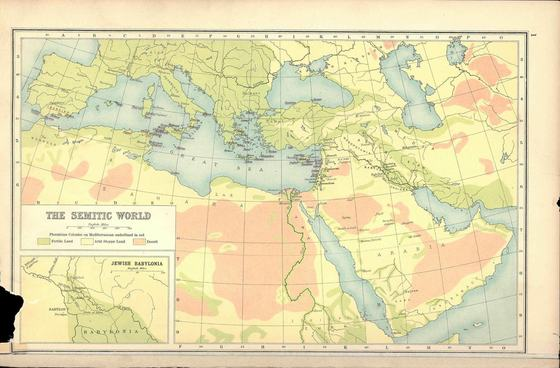
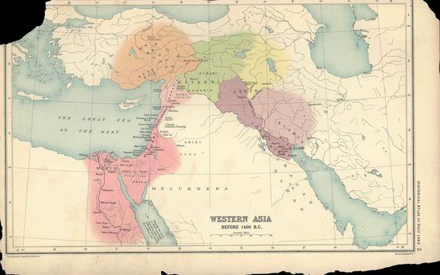
Before 1400 BC
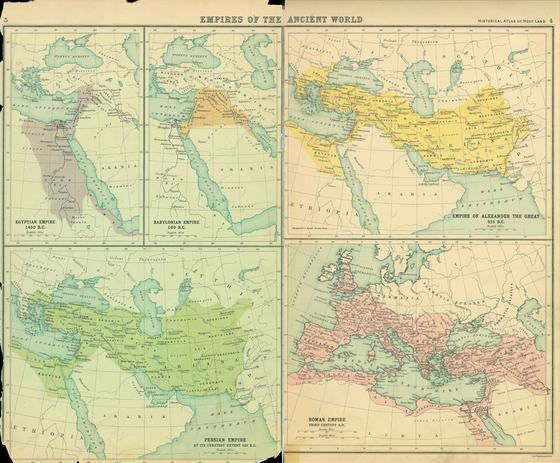
Egypt, Babylon and Persia; Alexander; Rome
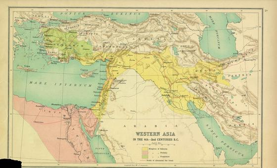
The Greek kingdoms after Alexander
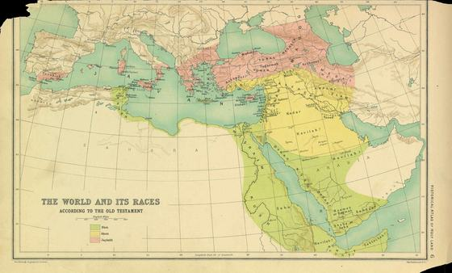
The table of nations, Genesis 10
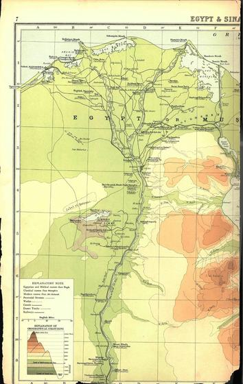
The land of the sojourn and the Exodus
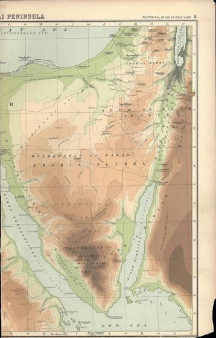
The wilderness wanderings
Part II · The land
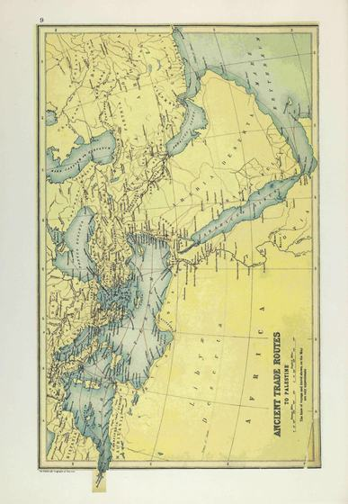
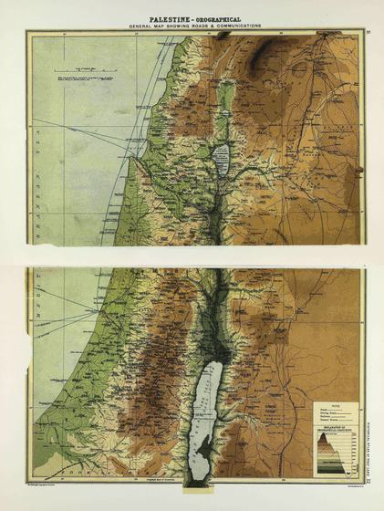
The general map of the land
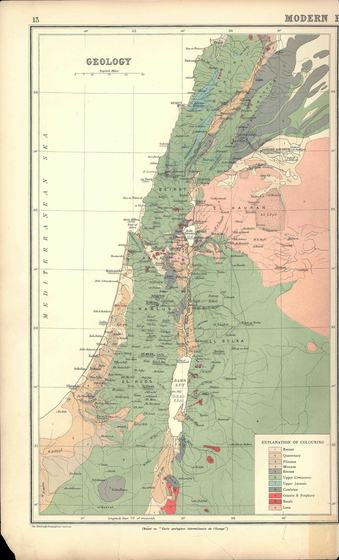
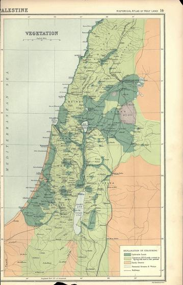
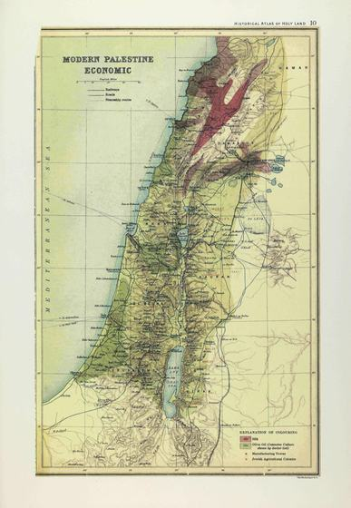
As it was in 1915
Part III · Palestine through Israel’s history
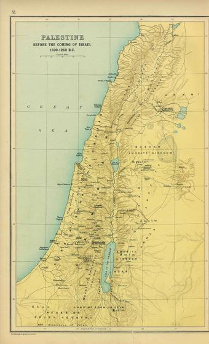
1500–1250 BC
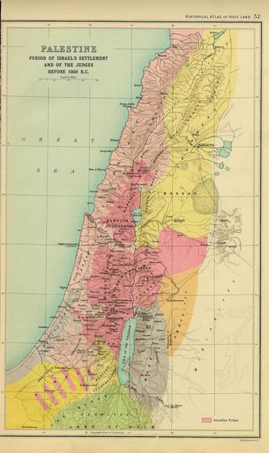
Before 1050 BC
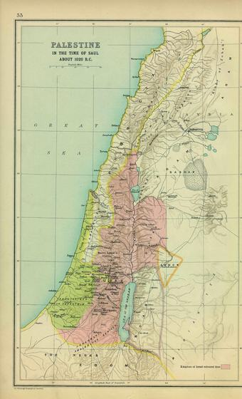
About 1020 BC
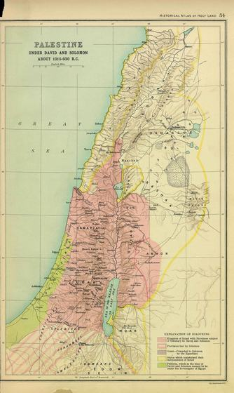
About 1015–930 BC
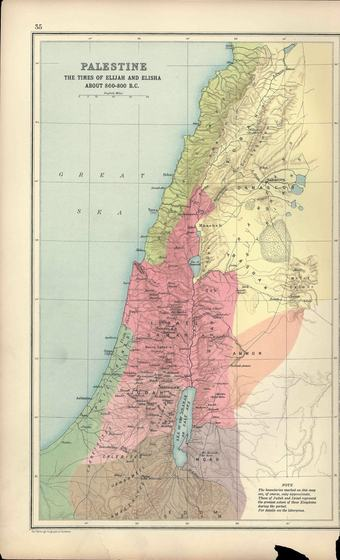
About 860–800 BC
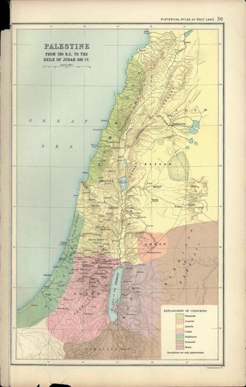
720–586 BC
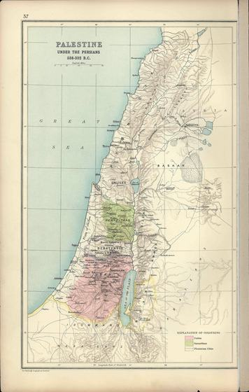
538–332 BC
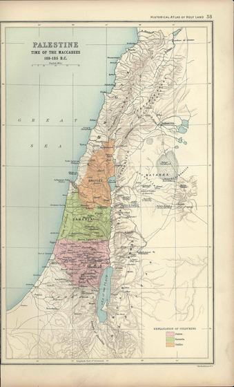
168–135 BC
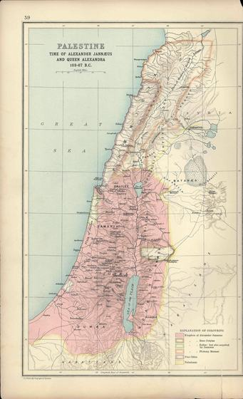
103–67 BC
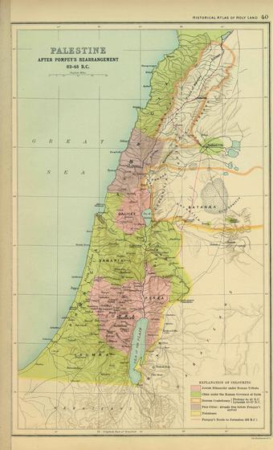
63–48 BC
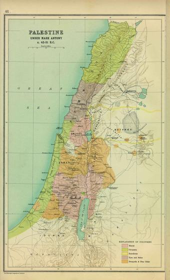
About 42–31 BC
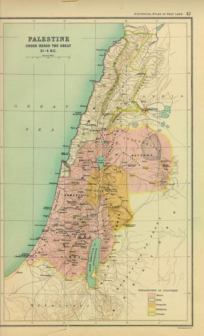
31–4 BC
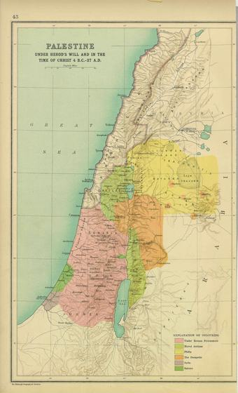
4 BC–AD 37
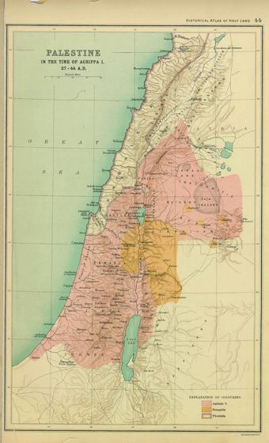
AD 37–44
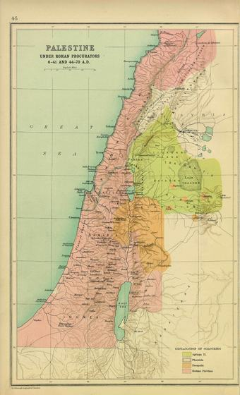
AD 6–41 and 44–70
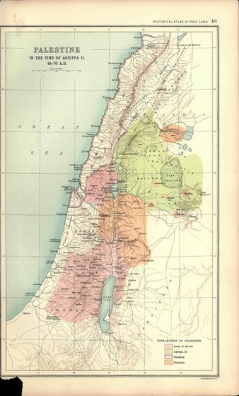
AD 48–70
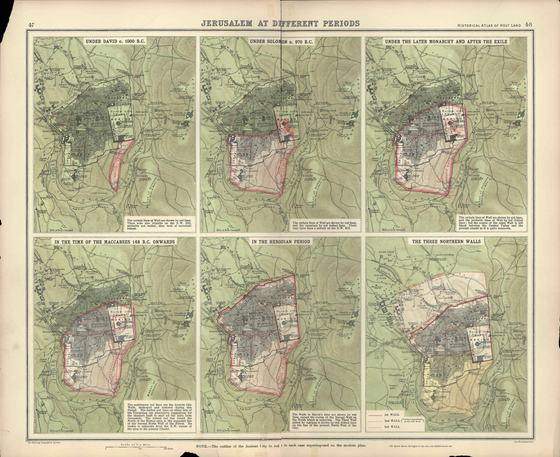
From David to the three northern walls
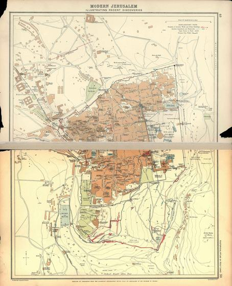
As it was in 1915
Part IV · The Christian era
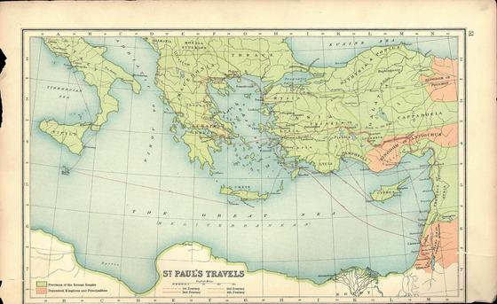
The eastern Mediterranean
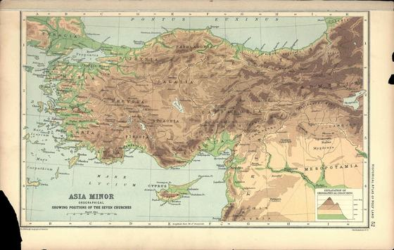
Revelation 2–3
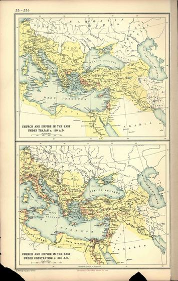
Under Trajan and under Constantine
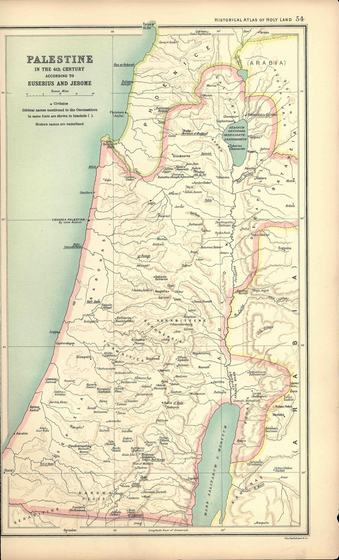
After Eusebius and Jerome
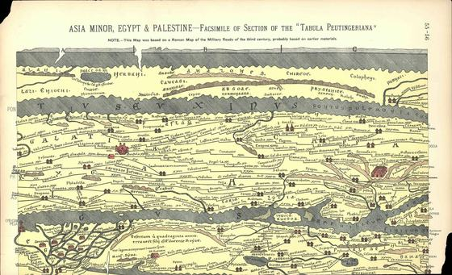
A Roman road map
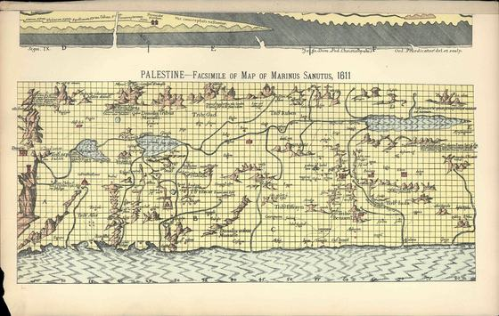
A map of about 1320
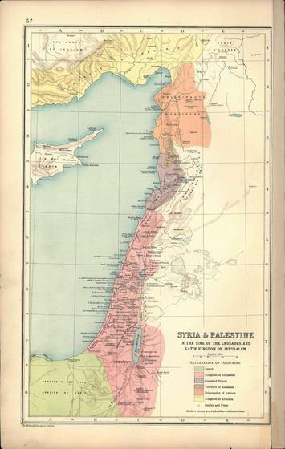
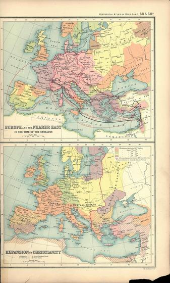
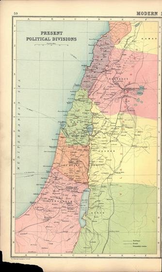
As they were in 1915
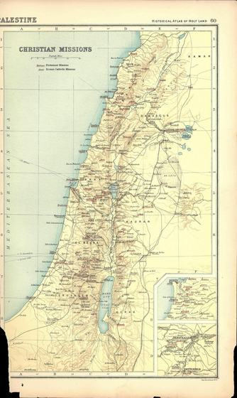
As they were in 1915